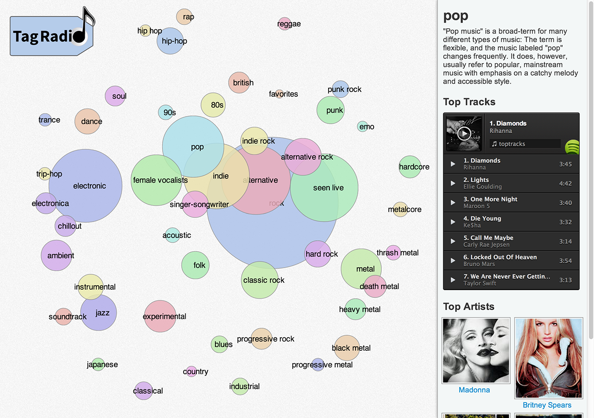

Tag Radio

Link
Skills
Web Design
Data Visualization
Tools
HTML, CSS, Javascript
last.fm API, Spotify API
d3.js
Partner
Kate Rushton
While looking through the last.fm api, we came up with the idea of visualizing genre's and their relations with one another. Last.fm users heavily tag their music and artists, and the api allows us to look at which tags are most similar to any tag (http://www.last.fm/api/show/tag.getSimilar). We gathered this data for the top 50 tags on last.fm and came up with an algorithm for finding their relations with one another.
After we gathered the data, we visualized it using d3. The size of a tag is its popularity, and its proximity to other tags is how related they are. You can browse through tags and listen to the top tracks using Spotify.